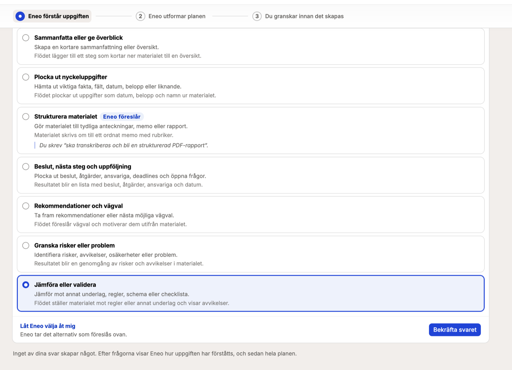
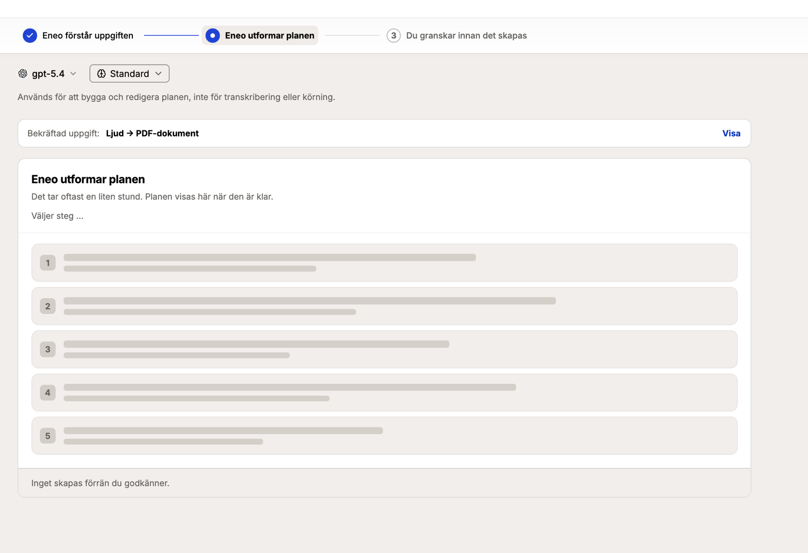
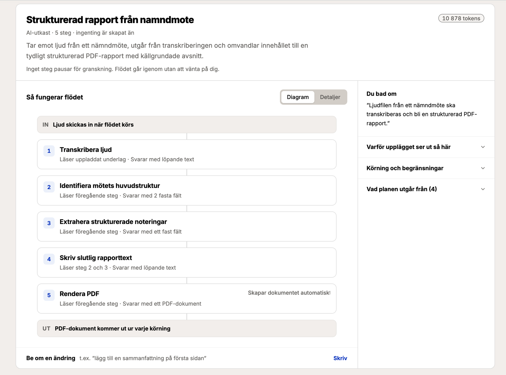

Flöden kopplar ihop uppgifter i fast ordning
Ett flöde bearbetar underlag i en bestämd ordning. Det tar emot text, dokument och ljud och skapar text, JSON eller dokument. Ni bygger flödet manuellt eller med AI-byggaren, och varje steg kan pausa för granskning av en människa. Körningshistoriken visar hur resultatet togs fram.
Eneo, flöden och moduler
Eneo är AI-plattformen. Ett flöde beskriver hur underlag bearbetas i steg med bestämd ordning. En modul är en separat webbapp som använder publicerade flöden och tillför gränssnittet för ett visst arbetsmoment.
-
Eneo, AI-plattformen
Modeller för språk och transkribering. Kunskapskällor. Ytor, det vill säga arbetsytor med egna medlemmar och behörigheter. Säkerhetsklasser, loggning och API.
-
Flöden, bearbetningen
Stegen, deras underlag och resultat, och granskningspunkterna. Publiceras i versioner och körs många gånger.
-
Moduler, gränssnittet
Användarens kontroller och resultatvyer för ett arbetsmoment. Tal till text tillför inspelning, strömning och visning av transkriberingar och dokument.
Flödets steg bearbetar underlag i fast ordning
Ett flöde har ett steg eller tiotals steg, beroende på uppgiften. Varje steg anger var underlaget kommer från, hur det bearbetas och vilket resultat steget ger. Ordningen låses när flödet publiceras. Modellen ändrar den inte under körning.
- Ljud från nämndmötet
- Transkribera ljudet
- Plocka ut beslut och åtgärder
- Granskning
- Skriv rapporttexten
- Skapa PDF
- PDF-rapport och transkribering
Ett exempel på hur ett flöde kan se ut. Vilka steg som ingår, och var flödet pausar för granskning, bestämmer den som bygger det.
| Indata | Beskrivning |
|---|---|
| Formulärfält | Text, siffror, datum, enkelval, flerval och listor. Fälten fylls i när flödet körs. |
| Dokument | PDF, Word (DOCX), PowerPoint (PPTX), Excel (XLSX), CSV, Markdown, textfiler, JSON och XML. Filer i de äldre formaten DOC och PPT avvisas; de behöver sparas som DOCX respektive PPTX. |
| Ljud | MP3, M4A, WAV, OGG, WebM och MP4. |
| Hämtning från API | Ett steg kan hämta sitt underlag med HTTP GET från ett API eller en webbadress innan det körs. Installationen bestämmer vilka adresser som får nås. |
| Stegtyp | Beskrivning |
|---|---|
| Modellsteg | En språkmodell med instruktion och valfri kunskapskälla. Modellen svarar med löpande text eller med JSON som senare steg kan läsa fält ur. |
| Transkribering | Ljud blir text med installationens transkriberingsmodell. Om en tjänst för talaridentifiering är ansluten märks replikerna med talare. |
| Talarmappning | Modellen föreslår vilken deltagare varje talare är. En person bekräftar eller rättar innan flödet fortsätter. |
| Sammansättning | Text byggs ihop av tidigare steg och formulärsvar enligt en mall, utan modell. |
| Dokument | Steget fyller i en Word-mall via mallens innehållskontroller, eller skapar ett dokument i PDF- eller DOCX-format av texten. |
| Leverans | Steget skickar resultatet till ett annat system med HTTP POST. Leveransen kan upprepas, och varje försök registreras. |
Utdata
Text i Markdown, svar i fast format (JSON), PDF, Word (DOCX) eller leverans till ett annat system.
Avgränsningar. MCP-verktyg i flödessteg byggs nu och ingår inte än; tills dess används MCP-verktyg via assistenter i Eneo. Ett steg kan hämta underlag med HTTP GET och leverera resultat med HTTP POST, men HTTP POST stöds inte som källa för stegets indata. Bilder tas inte emot som underlag.
En människa kan granska varje steg
Ett steg kan ställas in så att körningen pausar när steget är klart. Den som granskar ser stegets underlag och svar bredvid varandra och godkänner, ändrar eller avvisar svaret. Först då fortsätter eller avslutas körningen.
- Granskning per steg, inte bara i slutet. Den som bygger flödet väljer vilka steg som ska granskas: alla, några eller inga. Ett flöde som transkriberar och sammanfattar kan pausa efter transkriberingen, efter sammanfattningen eller efter båda.
- Ändringar förs vidare. Rättar granskaren svaret går den rättade versionen in i nästa steg. Talarmappning är ett sådant steg: modellen föreslår vem som sa vad, en person bekräftar, och transkriberingen skrivs om med namnen.
- Beslutet dokumenteras. Varje granskning sparas med vem som beslutade, vad som ändrades och när. En körning som ingen granskar avbryts efter granskningsfönstret, som standard 14 dagar.
- Mindre automation bias, högre kvalitet. Den som får ett färdigt dokument tenderar att godta det. Den som ser modellens svar bredvid underlaget, innan svaret används, upptäcker fel där de uppstår. Granskningen kostar tid i de steg som granskas, och ger i gengäld en leverans som verksamheten kan stå för.
AI-byggaren föreslår ett flöde utifrån uppgiften
Ett flöde byggs manuellt, steg för steg, eller med AI-byggaren. AI-byggaren är det rekommenderade sättet att börja. Den ställer frågor om uppgiften, visar sin tolkning och föreslår en plan. Flödesutkastet skapas när ni godkänner planen. Därefter kan utkastet ändras manuellt eller med AI-byggaren, och publiceras när det är klart.
Eneo förstår uppgiften
Ni beskriver uppgiften med egna ord och kan bifoga regler och styrdokument som underlag. AI-byggaren ställer en fråga i taget, med sitt förslag markerat; en fråga kan lämnas till Eneo att avgöra. Till sist visas tolkningen: syfte, indata, slutresultat och antaganden. Varje rad kan ändras.

Eneo utformar planen
Planen beskriver stegen, deras underlag och resultat, skälen till upplägget och flödets begränsningar. Ni kan begära en ändring i text, till exempel: "Lägg till en sammanfattning på första sidan."

Du granskar innan det skapas
Ni granskar planen som diagram eller i detalj. Godkännandet skapar utkastet. Ingenting körs.

Ändra ett befintligt flöde
AI-byggaren kan också öppnas på ett befintligt flöde. Vid redigering rekommenderar den att behålla befintliga val, men ni kan begära ändringar, och varje ändring visas innan den genomförs.
Diagram över flödet
Flödets steg, indata, utdata och kopplingar visas som ett diagram i redigeraren. Diagrammet kan laddas ner som bild, till exempel till en redovisning av hur ett ärende hanteras.
Körningshistoriken visar version, underlag och resultat
Ett flöde publiceras som en oföränderlig version med kontrollsumma. Varje körning är knuten till den publicerade version som användes. Ändringar i utkastet efteråt påverkar inte körningen.
- 1 Utkast
- 2 Publicerad version
- 3 Körning
- 4 Historik
- Historik. Historiken visar pågående och avslutade körningar med status, version, starttid och varaktighet.
- Per steg. För varje steg visas den faktiska instruktionen, underlaget, svaret, använda modeller, antal försök och felsökningsuppgifter.
- Token. Antalet token som skickats till och från modellen visas per steg och för hela körningen, enligt leverantörens rapportering. Saknad eller ofullständig uppgift märks ut.
- Bevisunderlag. Bevisunderlaget är dokumentationen av körningens instruktioner, underlag och svar. Om flödet tillåter export kan det laddas ner som JSON, i rå eller maskerad form. Varje nedladdning loggas med angivet skäl.
Underlaget visar hur resultatet togs fram, så att det kan granskas i efterhand och inte bara godtas.
Säkerhetsklassificering, gallring och behörigheter
- Säkerhetsklassificering. Organisationen definierar sina säkerhetsklasser. Ytan har en klass, och varje modell har en. Vid publicering kontrolleras att stegets modell uppfyller den klass som ytan, tidigare steg och kunskapskällor kräver. Ett steg kan ge sitt resultat en högre klass, aldrig en lägre. Klasserna visas med organisationens egna namn.
- Gallring. Eneo får en gemensam gallringsmotor för chattar, appar och uppladdade filer. Flöden ansluts i nästa steg med samma regler. Verksamheten sätter lagringstiden per yta eller flöde, i dagar. Utan lagringstid gallras inget automatiskt. Varje natt raderas de körningar vars tid har gått ut, som en helhet: körningen med uppladdade filer, inspelningar och skapade dokument. Varje radering loggas som antal och regel, aldrig som innehåll.
- Rättslig spärr. En rättslig spärr hindrar gallring av den körningshistorik den gäller, till exempel medan en begäran om utlämnande handläggs. För spärren registreras vem som lade den, skälet, tidpunkten, när den ska omprövas och hur länge den gäller.
- Behörigheter. Särskilda behörigheter krävs för att hantera gallringsregler och rättsliga spärrar. Ändringar loggas med gammalt och nytt värde.
Så gallras en körning
- Dag 0 Körningen avslutas
- Till exempel dag 30 Lagringstiden går ut
- Natten därpå Motorn prövar och raderar
- Efteråt Loggat
Status. Gallringsmotorn byggs nu (eneo-ai/eneo, pull request 1064). Flödenas gallringsregler, granskningskö och rättsliga spärrar finns redan på flödesgrenen.
Flödespaket kan användas i andra Eneo-installationer
Ett flöde kan exporteras som ett flödespaket i formatet .eneopkg och importeras i en annan Eneo-installation. Så delar en kommun ett flöde med en annan.
- Ingår: stegens inställningar och instruktioner, formulärfälten, vilka modeller och kunskapskällor stegen kräver, och Word-mallar om avsändaren väljer det.
- Ingår inte: körningshistorik, inloggningsuppgifter och de modeller och kunskapskällor som används lokalt. Vid import kopplar mottagaren flödet till sina egna modeller och kunskapskällor. Importen blir ett utkast som granskas och publiceras lokalt.
Planerat. En gemensam marknadsplats för flöden är planerad men ännu inte byggd (eneo-ai/eneo, issue 546): en versionshanterad katalog där en organisation publicerar ett flöde och en annan installerar det efter sin egen administratörs godkännande.
Fast ordning, varierande modellsvar
Flödets steg körs i en bestämd ordning som modellen inte ändrar. Modellens svar kan däremot variera mellan körningar. Därför dokumenterar körningshistoriken bearbetningen, och steg kan ställas in för granskning. I litteraturen kallas mönstret prompt chaining (Anthropic) eller sekventiella agenter (Google ADK, SequentialAgent). Eneo använder ordet flöden, eftersom modellen inte väljer ordningen under körningen.
Tal till text är en modul byggd på flöden
Se hur ett flöde blir ett gränssnitt för mobiltelefon, surfplatta och dator.